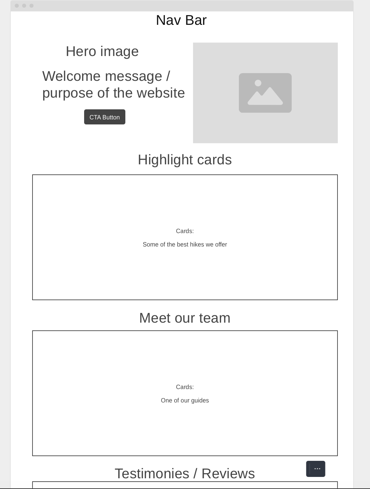
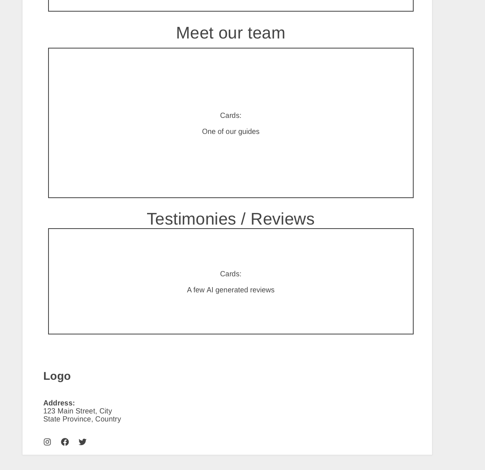
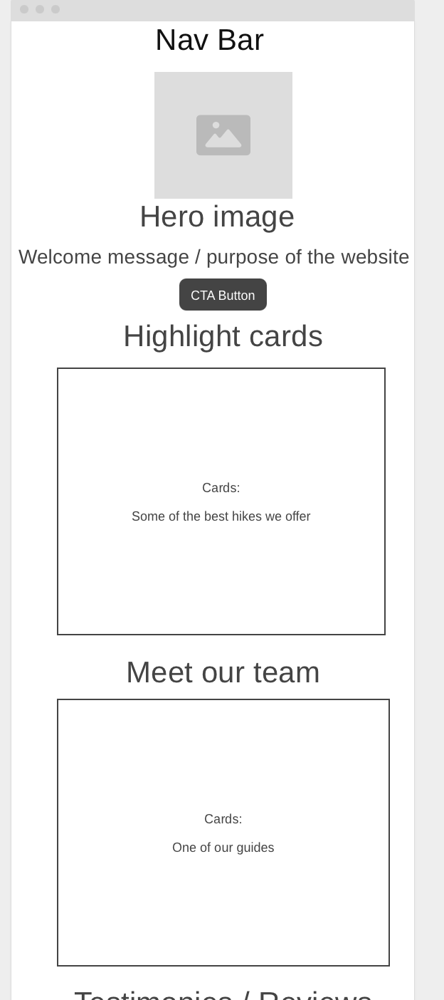
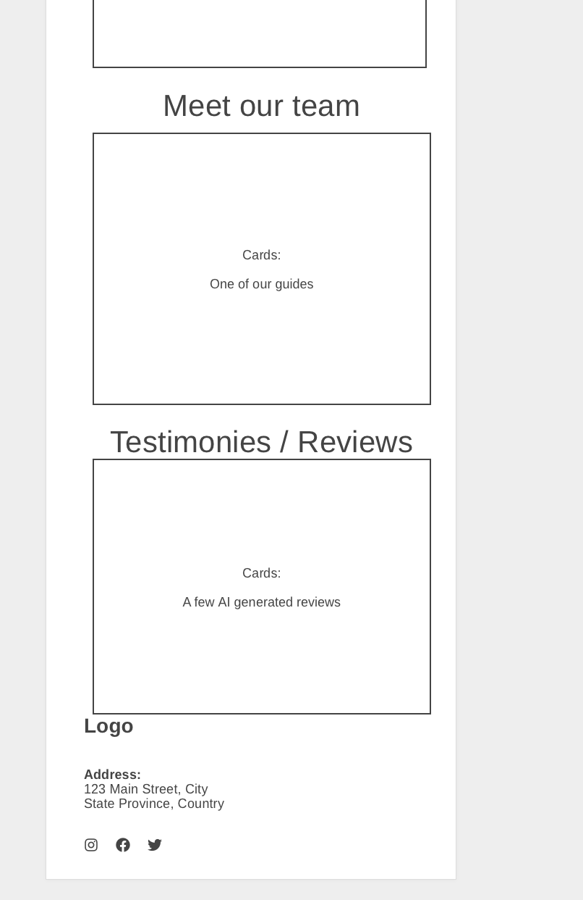

Name:
Hike Together!
Site purpose
Hike Together is an initiative that offers guided tours for those with adventurous spirits. The platform will allow users to connect with other hikers and get to know the beautiful parts of Costa Rica. The goal is to foster a sense of community among hikers and encourage outdoor activities.
Color Schema:
--main-color: #044389; --secondary-color: #BFDBF7; --tertiary-color: #E1E5F2; --color-accent: #FFFFFF; --background-color: #985F6F; It will be used as shown in the example below: 👇
Typography:
font-family: 'Google Sans', sans-serif;
Scenarios
How can I know which tour to choose if I am a beginner?
The tours will be labeled by difficulty so
beginners and pros will know which hikes fit better their needs and expectations.
How do I get in contact with the guides?
Easy! You start by filling the sign up form and then we will
send you a welcome email!



